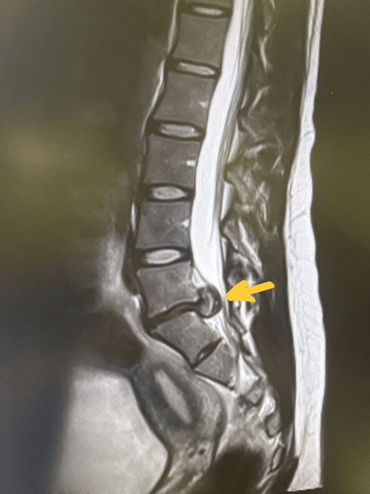
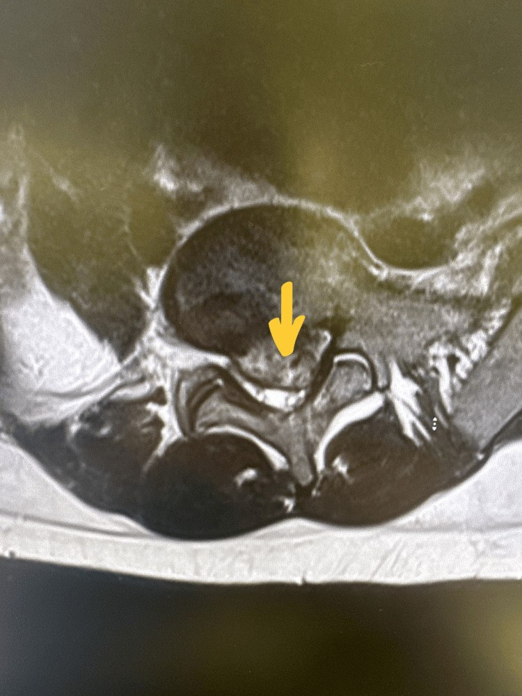
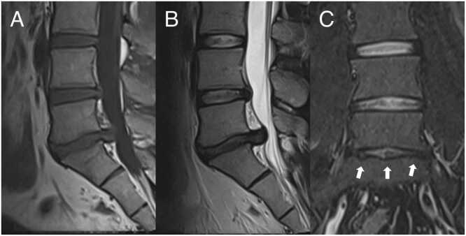
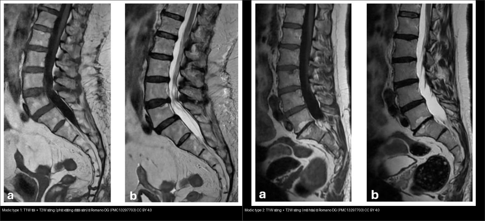
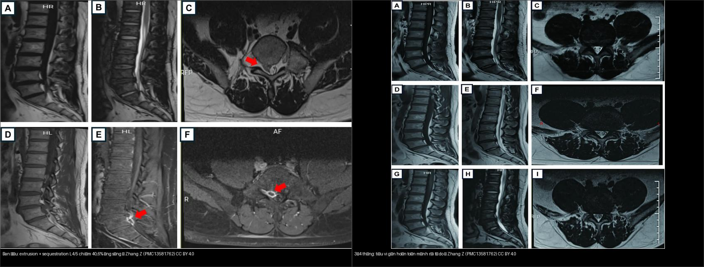

228 — Thoát vị đĩa đệm thắt lưng: phân loại hình thái & phân độ Pfirrmann/Modic / Lumbar disc herniation: morphology, Pfirrmann & Modic grading
Tags: pattern:thoat-vi-dia-dem pattern:hep-ong-song pattern:modic pattern:pfirrmann vung:cot-song-that-lung score:Pfirrmann score:Modic score:Schizas protocol:MRI-cot-song incidentaloma:modic
Mức chắc chắn (certainty): tổng hợp y văn (literature synthesis) — tổng hợp từ tổng quan + ca nguyên văn (verbatim case) giữ đúng tuổi – lâm sàng – chú thích gốc: thoát vị di trú gây hội chứng đuôi ngựa (Alshanqity M et al., Cureus 2025, PMC12854390), tiêu vi mảnh rời tự do trên MRI nối tiếp (Zhang Z et al., Front Pain Res 2026, PMC13581762), Pfirrmann + Modic trên cùng chuỗi xung (Korhonen T et al., Eur J Radiol Open 2026, PMC12855554), Modic type 1/2 (Romano DG et al., Diagnostics 2026, PMC13297703).
1. Tổng quan — vì sao đĩa đệm "mất nước" lại đổi tín hiệu, và ngưỡng của một thoát vị
- Giải phẫu chức năng 3 phần: vòng sợi ngoài (annulus fibrosus) dai giữ áp lực, nhân tủy (nucleus pulposus) giàu proteoglycan + nước như một "gối thủy lực", và sụn tận cùng (cartilaginous endplate) làm cửa khuếch tán nuôi đĩa. Đĩa trưởng thành không có mạch máu nên dinh dưỡng hoàn toàn nhờ khuếch tán từ sụn tận cùng — đây là mấu chốt của mọi thoái hóa.
- TẠI SAO T2 thấp = đĩa thoái hóa (vật lý học): tín hiệu T2 của nhân tủy tỉ lệ với lượng nước tự do liên kết proteoglycan. Thoái hóa → mất proteoglycan → mất nước → giảm tín hiệu T2. Vì vậy "nhân tủy tối trên T2" là chỉ dấu thay thế cho mức mất nước, không phải một bệnh riêng.
- TẠI SAO Pfirrmann có 5 độ: hệ Pfirrmann (2001) chấm theo 4 biến: (1) tín hiệu T2 của nhân tủy, (2) cấu trúc (đồng nhất hay không), (3) phân biệt nhân – vòng sợi, (4) chiều cao đĩa. Càng mất nước + càng mất ranh giới + càng xẹp = độ càng cao.
- I: đồng nhất, trắng sáng, ranh giới nhân/vòng rõ, chiều cao bình thường.
- II: không đồng nhất, vẫn trắng sáng, ranh giới rõ, chiều cao bình thường.
- III: không đồng nhất, xám, ranh giới không rõ, chiều cao bình thường–giảm nhẹ.
- IV: không đồng nhất, xám–đen, mất ranh giới, chiều cao giảm nhẹ–vừa.
- V: không đồng nhất, đen, mất ranh giới, khoang đĩa xẹp.
- Có biến thể 8 độ "cải tiến" tách nhỏ các độ cao cho người già/đĩa thoái hóa nặng, nhưng vẫn là thang định tính, phụ thuộc người đọc (xem
13605291).
- TẠI SAO Modic lại đổi tín hiệu theo 3 kiểu (vật lý + mô bệnh học): Modic mô tả tủy xương dưới sụn tận cùng kế cận:
- Type 1 — phù/viêm tủy xương: tăng nước tự do + tăng tính thấm mạch → T1 THẤP, T2 CAO, ngấm gadolinium. Là kiểu "hoạt tính", gắn đau lưng và tái phát.
- Type 2 — chuyển mỡ: tủy đỏ → tủy vàng (mỡ). Mỡ làm ngắn T1 → T1 CAO, T2 cao/đồng tín hiệu, không ngấm. Là kiểu ổn định/chuyển hóa mỡ.
- Type 3 — xơ cứng: xương đặc xơ thay tủy → T1 THẤP, T2 THẤP, không ngấm.
- Type 1 và 2 có thể chuyển đổi qua lại theo thời gian; type 1 là kiểu nguy cơ cao (xem mục 4).
- Ngưỡng định lượng nằm lòng:
- Định danh "thoát vị" (Fardon/ASNR 2014): phình đĩa (bulge) lan rộng > 25% chu vi đĩa và không phải thoát vị; lồi (protrusion) khi đáy rộng hơn mọi đường kính phần thoát ra (đáy > chiều cao); thoát ra (extrusion) khi đáy hẹp hơn phần thoát ra (đáy < chiều cao); mảnh rời (sequestration) khi mảnh mất liên tục với đĩa gốc và có thể di trú lên/xuống.
- Mức chèn ép ống sống: ca minh họa mảnh thoát vị chiếm 40,6% diện tích ống sống kèm chèn đuôi ngựa (Zhang Z et al., PMC13581762).
- Hẹp ống sống trung tâm (kinh điển): đường kính trước–sau túi màng cứng < 10 mm = tương đối, < 7 mm = tuyệt đối; diện tích túi màng cứng < 100 mm² gợi ý hẹp tương đối, < 75 mm² = nặng. Ngách bên (lateral recess) bị coi là hẹp khi chiều cao < 3–4 mm.
- Modic type 1 là yếu tố nguy cơ TÁI PHÁT độc lập: OR 2,97 (95% CI 2,20–4,01); tỷ lệ tái phát chung sau mổ nội soi 12,7%, vi phẫu 11,4%, mổ mở 15,3% (Soliman MAR et al., Neurospine 2026, PMC12890318).

T2W sagittal: mảnh thoát vị trung tâm L5–S1 di trú theo trục dọc (cranio-caudal migration) (mũi tên vàng), chèn ép nặng đuôi ngựa và hai rễ S1 — hình thái extrusion + di trú, tương ứng bệnh cảnh hội chứng đuôi ngựa (cấp cứu). Alshanqity M et al., Cureus 2025 (PMC12854390, Fig. 1), CC BY 4.0.2. Mẫu hình + chẩn đoán phân biệt theo hình thái & vị trí (Gamut)
Đọc hai trục cùng lúc: (1) hình thái (phình → lồi → thoát ra → mảnh rời) và (2) vị trí trên mặt cắt ngang (quyết định rễ nào bị chèn).
- Hình thái (nhớ "B-P-E-S" = Bulge – Protrusion – Extrusion – Sequestration):
- Bulge (phình): lan rộng theo chu vi, không phải thoát vị thật; thường do thoái hóa đĩa + lỏng lẻo, hay gặp ở người không triệu chứng.
- Protrusion (lồi): đáy rộng hơn phần thoát ra, vẫn liên tục với đĩa.
- Extrusion (thoát ra): đáy hẹp hơn phần thoát ra; có thể di trú.
- Sequestration (mảnh rời): mảnh mất liên tục với đĩa gốc — có thể tiêu vi theo thời gian (xem mục 5).
- Vị trí mặt cắt ngang — quy tắc "rễ nào bị chèn":
- Trung tâm (central): túi màng cứng → đuôi ngựa, thường đái khó, tê yên ngựa, yếu hai chân (đuôi ngựa).
- Cạnh trung tâm / dưới khớp (paracentral / subarticular): hay gặp nhất ở L4–L5 và L5–S1; chèn rễ đi ngang (traversing root) — ở L4–L5 là rễ L5.
- Lỗ liên hợp (foraminal) và ngoài lỗ (extraforaminal/far-lateral): chèn rễ đi ra (exiting root) — ở L4–L5 là rễ L4.
- Mẹo nhớ: trung tâm → đuôi ngựa; dưới khớp → rễ "đi ngang"; lỗ/ngoài lỗ → rễ "đi ra".
- Bảng gamut theo vị trí chèn ép (giải thích học thuyết thể tích của ống sống): hẹp trung tâm = tổn thương túi màng cứng (đuôi ngựa); hẹp ngách bên = tổn thương rễ đi ngang; hẹp lỗ liên hợp = rễ đi ra. Cùng một "khối thoát vị", vị trí quyết định chân dung lâm sàng.
- Gamut DDx của một "khối ngoài màng cứng trong ống sống": thoát vị đĩa (đa số), nang hoạt dịch khớp (facet synovial cyst), di căn ngoài màng cứng, áp-xe ngoài màng cứng/viêm đĩa–đốt sống, máu tụ ngoài màng cứng, giãn tĩnh mạch ngoài màng cứng.

T2W axial: khối thoát vị ra sau (mũi tên vàng) làm hẹp nặng ống sống và hẹp ngách bên hai bên — đối chiếu trục (1)&(2): hình thái + vị trí để suy ra rễ bị chèn. Alshanqity M et al., Cureus 2025 (PMC12854390, Fig. 2), CC BY 4.0.3. Bảng so sánh phân biệt (ma trận đối chiếu)
| Thực thể (entity) | Hình ảnh điển hình | Chốt vào (rule-in) | Chốt loại (rule-out) | Gợi ý xác nhận |
|---|---|---|---|---|
| Phình đĩa (bulge) | Lan rộng theo chu vi, bờ trơn, < 3 mm ở nhiều tầng | Lan > 25% chu vi đĩa + không khu trú một điểm | Khu trú rõ một điểm + đáy rộng → lồi (protrusion) | So sánh với mức đĩa trên/dưới; bệnh cảnh lâm sàng |
| Lồi (protrusion) | Đáy rộng hơn phần thoát ra, còn liên tục | Đáy > chiều cao khối thoát ra | Đáy < chiều cao → thoát ra (extrusion) | T2 sagittal + axial |
| Thoát ra (extrusion) | Đáy hẹp hơn phần thoát ra, vẫn liên tục | Đáy < chiều cao + có/không di trú | Mảnh mất liên tục → mảnh rời (sequestration) | T1/T2 sagittal đa lát |
| Mảnh rời (sequestration) | Mảnh mất liên tục với đĩa gốc, có thể di trú lên/xuống, viền ngấm mỏng trên MRI sau tiêm | Mảnh rời tự do + di trú (có thể chèn đuôi ngựa) | Còn cầu nối với đĩa → extrusion | MRI ± tiêm; theo dõi T2 (có thể tiêu vi) |
| Nang hoạt dịch khớp (facet cyst) | Cấu trúc dịch (T2 sáng, T1 tối), dính mặt sau khớp, ở ngách bên | Có cuống/dính vào bao khớp + tín hiệu dịch đồng nhất | Có mỡ/calci trong khối → nghĩ u/khác | MRI; tiêm khớp (nếu cần) |
| Viêm đĩa–đốt sống (discitis-osteomyelitis) | Phù tủy hai bên đĩa (Modic type 1 cả hai thân đốt) + ngấm cả đĩa | Ngấm thuốc CẢ đĩa + phù hai thân đốt kề + phá hủy | Chỉ ngấm một thân đốt, chừa đĩa → nghĩ di căn/xẹp lành | MRI + tiêm; CRP/máu; sinh thiết |
| Di căn ngoài màng cứng | Khối ngoài màng cứng, chừa đĩa, phá hủy xương/ngấm mạnh | Chừa đĩa đệm + tổn thương thân đốt + ngấm | Còn đĩa nguyên vẹn + tín hiệu đĩa thoái hóa điển hình → thoát vị | MRI tiêm + CT xương; tìm u nguyên phát |
Bảng phân độ Modic (đối chiếu trên cùng một chuỗi T1/T2):
| Modic | T1W | T2W | Ngấm thuốc | Ý nghĩa lâm sàng |
|---|---|---|---|---|
| Type 1 | Thấp | Cao | Có | Phù/viêm tủy xương dưới sụn — hoạt tính, gắn đau lưng + tái phát (OR 2,97) |
| Type 2 | Cao | Cao/đồng tín hiệu | Không | Chuyển mỡ tủy (ổn định/chuyển hóa) |
| Type 3 | Thấp | Thấp | Không | Xơ cứng xương dưới sụn |
Bảng phân độ Pfirrmann (T2W sagittal):
| Độ | Tín hiệu nhân tủy | Cấu trúc | Ranh giới nhân–vòng | Chiều cao đĩa |
|---|---|---|---|---|
| I | Trắng sáng | Đồng nhất | Rõ | Bình thường |
| II | Trắng sáng | Không đồng nhất | Rõ | Bình thường |
| III | Xám | Không đồng nhất | Không rõ | Bình thường–giảm nhẹ |
| IV | Xám–đen | Không đồng nhất | Mất | Giảm nhẹ–vừa |
| V | Đen | Không đồng nhất | Mất | Xẹp khoang đĩa |

Cùng một bệnh nhân L5/S1: (A) T1W, (B) T2W sagittal cho thấy đĩa Pfirrmann độ 4 (nhân xám–đen, mất ranh giới), (C) STIR coronal cho thấy Modic type 2 hai bên (tăng tín hiệu mỡ dưới sụn, mũi tên trắng). Đây là mẫu "đọc 2 hệ trên 1 chuỗi xung". Korhonen T et al., Eur J Radiol Open 2026 (PMC12855554, Fig. 1), CC BY 4.0.
Trái — Modic type 1: T1W tối + T2W sáng (phù/viêm tủy xương dưới sụn, "hoạt tính"). Phải — Modic type 2: T1W sáng + T2W sáng (chuyển mỡ). Chỉ khác nhau ở T1 — vì mỡ làm ngắn T1. Ảnh ghép letterbox giữ tỷ lệ (chỉ ghép 2 ảnh CC BY). Romano DG et al., Diagnostics 2026 (PMC13297703, Fig. 3 & 4), CC BY 4.0.4. Protocol + hệ phân độ + sơ đồ
- MRI là chuẩn (không dùng CT để "chẩn đoán" thoát vị mềm). Protocol tối thiểu: T2W sagittal (đánh giá Pfirrmann + hình thái + di trú), T2W axial (định khu + hẹp ngách/lỗ), T1W sagittal, và STIR (phát hiện Modic type 1 hoạt tính — T2 thường bị "che" bởi mỡ type 2). Tiêm gadolinium không thường quy, chỉ khi nghi mảnh rời/áp-xe/u.
- CT: có giá trị cho hẹp ống sống do xương (phì đại diện khớp, vôi hóa dây chằng vàng), không thay thế MRI để đọc Pfirrmann/Modic.
- Phân độ hẹp trung tâm theo Schizas (axial T2W, tỉ lệ dịch não tủy/rễ): A = không/ít hẹp, còn rõ dịch não tủy quanh rễ; B = hẹp vừa, rễ lấp đầy túi nhưng còn nhận diện từng rễ; C = hẹp nặng, không còn nhận diện được rễ, túi đồng tín hiệu xám; D = hẹp tối đa, mất cả rễ lẫn mỡ ngoài màng cứng (Honjoh K et al., J Clin Med 2026, PMC13207235).
- Modic type 1 là kiểu nguy cơ cao: là yếu tố nguy cơ tái phát thoát vị độc lập (OR 2,97; 95% CI 2,20–4,01); trong khi loại thoát vị (protrusion/extrusion/sequestration), tầng L5–S1 và Pfirrmann cao không đạt ý nghĩa (Soliman MAR et al., Neurospine 2026, PMC12890318).
flowchart TD
A["T2W sagittal: nhân tủy"] --> B{"Tín hiệu + cấu trúc<br/>+ ranh giới + chiều cao"}
B -->|"trắng sáng, đồng nhất, ranh giới rõ"| I["Pfirrmann I"]
B -->|"trắng sáng, KHÔNG đồng nhất, ranh giới rõ"| II["Pfirrmann II"]
B -->|"xám, ranh giới KHÔNG rõ, cao bình thường/giảm nhẹ"| III["Pfirrmann III"]
B -->|"xám-đen, mất ranh giới, giảm vừa"| IV["Pfirrmann IV"]
B -->|"đen, xẹp khoang đĩa"| V["Pfirrmann V"]
IV --> M["Đọc kèm T1/T2 thân đốt dưới sụn → phân độ Modic"]
V --> M
M --> M1["Modic 1: T1 tối + T2 sáng + ngấm = HOẠT TÍNH (nguy cơ tái phát OR 2,97)"]
M --> M2["Modic 2: T1 sáng + T2 sáng, không ngấm = mỡ hóa"]
M --> M3["Modic 3: T1 tối + T2 tối = xơ cứng"]
flowchart TD
S["Axial T2W: hẹp ống sống trung tâm"] --> Q{"Còn dịch não tủy quanh rễ?"}
Q -->|"có, rễ nhận diện được"| AB["Schizas A hoặc B"]
Q -->|"không: rễ lấp đầy, xám đồng nhất"| C["Schizas C"]
Q -->|"không: mất rễ + mất mỡ ngoài màng cứng"| D["Schizas D"]
AB --> R{"Khu trú hay lan rộng?"}
R -->|"A1-A2 tối thiểu, A3-A4 rõ"| T1["Theo dõi/bảo tồn nếu không đuôi ngựa"]
C --> T2["Xem xét giải ép nếu lâm sàng tương ứng"]
D --> T3["Nghĩ giải ép; kiểm tra hội chứng đuôi ngựa (cấp cứu)"]
5. Biến thể bình thường & cạm bẫy
- Phình/thoát vị "không triệu chứng" rất hay gặp: trên MRI người không đau lưng, một tỉ lệ lớn có bulge/protrusion — hình ảnh phải khớp lâm sàng, đừng mổ theo phim.
- Mảnh rời tự do có thể TIÊU VI: theo dõi chuỗi MRI, mảnh sequestration L4/5 chiếm 40,6% ống sống đã tiêu vi gần hoàn toàn (
3 tháng) rồi hoàn toàn (4 tháng) dưới điều trị bảo tồn (Zhang Z et al., PMC13581762) — "khối ngoài màng cứng mới xuất hiện + ngấm viền" có thể là mảnh rời đang tiêu vi, KHÔNG phải u/áp-xe. - Mảnh rời di trú: mảnh có thể di trú lên/xuống (như ca PMC12854390) và chèn đuôi ngựa — luôn xem nhiều lát sagittal T2, đừng chỉ đọc lát ở tầng đĩa.
- Khe nứt vòng sợi (annular fissure) + HIZ: vùng tăng tín hiệu T2 ở vòng sợi sau ("high-intensity zone") không đồng nghĩa với thoát vị — đó là rách vòng sợi; chỉ gọi thoát vị khi có dịch chuyển chất đĩa ra ngoài ranh giới đĩa.
- Hiện tượng chân không (vacuum phenomenon): khí trong đĩa gây tín hiệu trống mọi chuỗi, dễ đọc nhầm "mảnh rời tối" — đối chiếu CT thấy khí (đậm độ khí).
- Cạm bẫy mặt cắt ngang — rễ dính (conjoined nerve root) & rễ dị vị: bờ rễ dày bất thường ở ngách bên có thể giả khối thoát vị; dùng chuỗi T2 axial nhiều lát + coronal để theo dõi rễ.
- Modic "type 1 cả hai bên đĩa" là cờ đỏ của viêm đĩa–đốt sống (ngấm cả đĩa) — không được nhầm với thoái hóa Modic type 1 đơn thuần; ca đó phải loại trừ nhiễm trùng (xem bài
222). - Cạm bẫy hình học kinh điển (hệ ống sống): một "khối ngoài màng cứng" cần được định khu theo 3 khoang (ngoài màng cứng/trong màng cứng–ngoài tủy/nội tủy) trước khi chốt nguyên nhân (xem bài
220).
6. Tự lượng giá — Blind Quiz
Ca 1 — Nam vận động viên, đau lưng cấp sau nâng tạ, yếu hai chân + đái khó. Nhìn phim sagittal, mô tả trước.
- Hỏi: hình thái thoát vị? tầng nào? có dấu hiệu gì trong ống sống? đây là cấp cứu gì?
Bấm để hiện đáp án
- Thoát vị thể extension có di trú trục dọc (cranio-caudal migration) ở L5–S1, mảnh lớn trung tâm chèn ép đuôi ngựa và hai rễ S1.
- Bệnh cảnh hội chứng đuôi ngựa (cauda equina syndrome) — cấp cứu phẫu thuật (đái khó, tê yên ngựa, yếu hai chân).
- T2 axial đối chiếu: Lồi/thoát vị ra sau làm hẹp nặng ống sống + hẹp ngách bên hai bên.
- Nguồn ca nguyên văn: Alshanqity M et al., Cureus 2025 (PMC12854390), CC BY 4.0. Phản biện: đây là ca nặng, không điển hình về cơ chế (chấn thương do nâng tạ ở nữ vận động viên) — nhưng hình thái extrusion + di trú là điển hình.
Ca 2 — BN 34 tuổi, đau thắt lưng mạn. Đọc chuỗi xung và chấm 2 hệ phân độ:
- Hỏi: Pfirrmann mấy độ? Modic kiểu nào? vì sao?
Bấm để hiện đáp án
- (A/B) đĩa L5/S1 nhân xám–đen, mất ranh giới nhân–vòng, chiều cao giảm → Pfirrmann độ 4.
- (C) STIR coronal: tăng tín hiệu dưới sụn hai bên (mũi tên trắng) → Modic type 2 (tín hiệu mỡ; nếu là type 1 sẽ tối trên T1W).
- Bài học: Pfirrmann = T2 nhân tủy; Modic = T1/T2 tủy xương dưới sụn. Hai hệ độc lập, đọc cùng lúc.
- Nguồn ca: Korhonen T et al., Eur J Radiol Open 2026 (PMC12855554, Fig. 1), CC BY 4.0.
Ca 3 — Hai bệnh nhân khác nhau, cùng "vệt bất thường dưới sụn". Đọc T1 trước, T2 sau:
- Hỏi: bên nào "hoạt tính"? dấu hiệu quyết định nằm ở chuỗi nào? ý nghĩa lâm sàng?
Bấm để hiện đáp án
- Trái = Modic type 1 (T1 tối + T2 sáng) = phù/viêm tủy xương dưới sụn, HOẠT TÍNH — gắn đau lưng và nguy cơ tái phát cao (OR 2,97).
- Phải = Modic type 2 (T1 sáng + T2 sáng) = chuyển mỡ, kiểu ổn định.
- Chốt phân biệt nằm ở T1W (mỡ làm ngắn T1 → sáng). Nếu chỉ có T2 sẽ dễ nhầm.
- Nguồn: Romano DG et al., Diagnostics 2026 (PMC13297703), CC BY 4.0.
Ca 4 — Nam 45 tuổi, đau chân L4/5, được theo dõi bảo tồn. Nhìn baseline và phim lại:

- Hỏi: tổn thương ban đầu là gì? điều gì xảy ra ở phim lại? cạm bẫy?
Bấm để hiện đáp án
- Baseline: extrusion + mảnh rời (sequestration) L4/5, chiếm 40,6% ống sống.
- Phim lại ~3–4 tháng: mảnh rời tiêu vi gần hoàn toàn rồi hoàn toàn — hiện tượng tiêu vi tự nhiên của mảnh rời.
- Cạm bẫy: một khối ngoài màng cứng mới kèm ngấm viền mỏng trên MRI có thể là mảnh rời đang tiêu vi, không phải u/áp-xe — đối chiếu lâm sàng và theo dõi.
- Nguồn ca: Zhang Z et al., Front Pain Res 2026 (PMC13581762), CC BY 4.0.
Bài liên quan chéo
- 200 – Tổng quan Thần kinh
- 220 – Ống sống 3 khoang (định khu khối ngoài màng cứng)
- 221 – Chấn thương cột sống
- 222 – Viêm đốt sống (Modic "type 1 hai bên đĩa" = cờ đỏ nhiễm trùng)
- 223 – Chấn thương tủy sống (ASIA, SCIWORA)
- 225 – Hội chứng tủy không hoàn toàn
Không dùng để chẩn đoán độc lập khi chưa có người hướng dẫn.